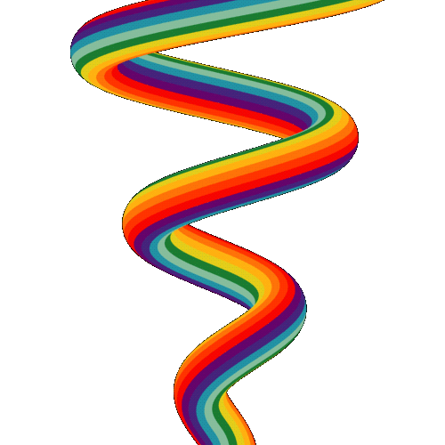

Иду я короче по улице такой. Решил к чике подкатить. Подхожу, говорю, привет воробушек, пойдём, может,
почирикаем

#hardfuck
разборки с женой
@vasyapupking
? Она чет посмотрела на меня как-то
не здорово
#ew
Clint Eastwood
@johnsmith
. И свалила. Я парень простой и, если честно, в такие моменты хочется просто
одного
#headsmash
Взять и уебать
@@jasongreen
. Но у меня сегодня было хорошее настроение. Ладно, пусть живёт.